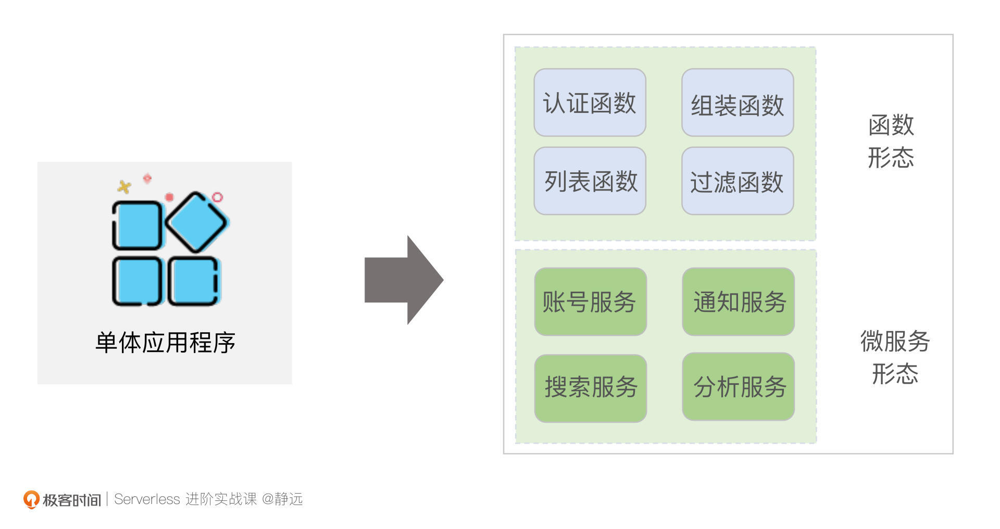
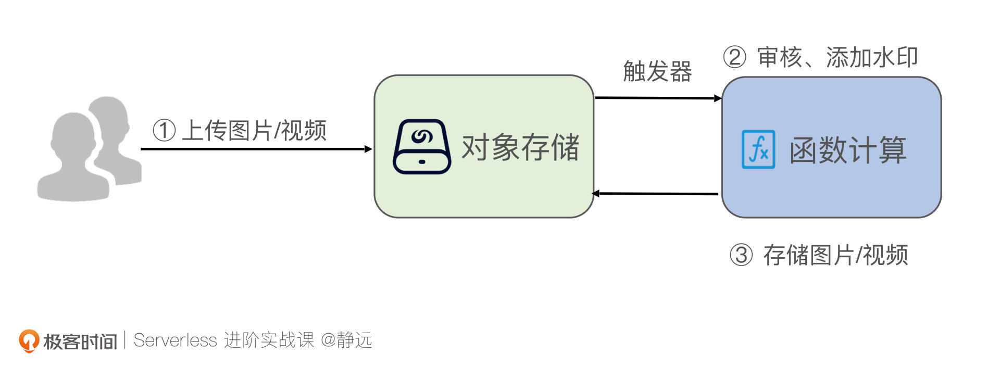
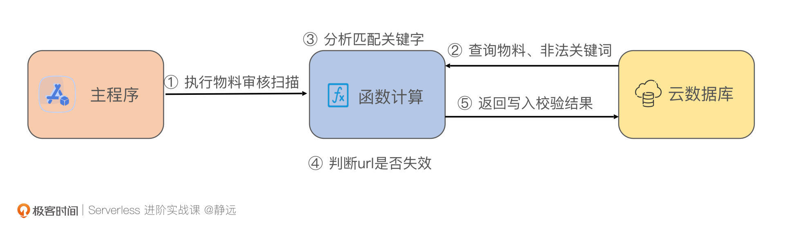
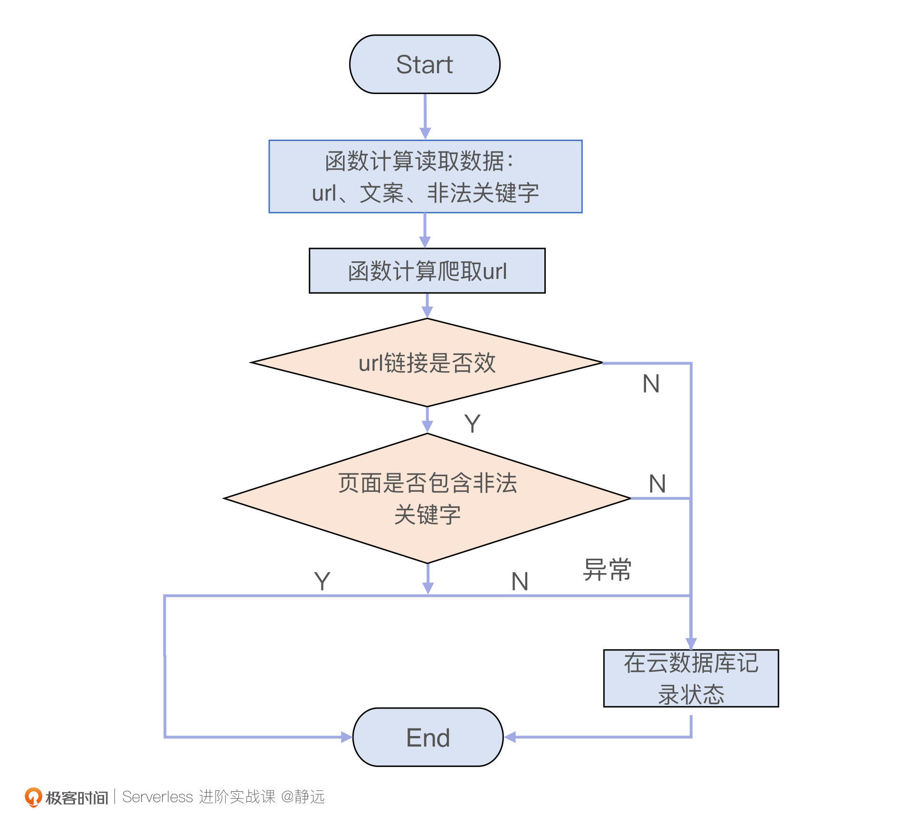

- 00 开篇词 Serverless是降本增效浪潮下的必然选择.md.html
- 00 思维构建 如何在新赛道下进阶Serverless能力？.md.html
- 01 生命周期：函数计算的基本流程是如何执行的？.md.html
- 02 触发器：如何构建事件源与函数计算的纽带？.md.html
- 03 高级属性：应对生产级别的应用，你需要掌握哪些技能？.md.html
- 04 冷启动：如何加快函数的第一次调用过程？.md.html
- 05 扩缩容：如何应对流量的波峰波谷？.md.html
- 06 流量转发：函数在不同情形下是如何执行的？.md.html
- 07 运行时（上）：不同语言形态下的函数在容器中是如何执行的？.md.html
- 08 运行时（下）：不同语言形态下的函数在容器中是如何执行的？.md.html
- 09 小试牛刀（一）：如何利用函数之间的调用解决业务问题？.md.html
- 10 小试牛刀（二）：如何突破VPC网络的速度限制？.md.html
- 11 WebIDE：如何让函数远离繁琐的本地开发模式？.md.html
- 12 编排：如何协调多任务的运行？.md.html
- 13 可观测（上）： 如何构建多维度视角下的Serverless监测体系？.md.html
- 14 可观测（下）： 如何构建多维度视角下的Serverless监测体系？.md.html
- 15 选型：不同阶段的数据应如何存储？.md.html
- 16 动手体验（一）：如何实现业务高效率地开发上线？.md.html
- 17 动手体验（二）：如何在云函数场景下实现一个有状态的服务？.md.html
- 18 实战指南：Serverless沙场老兵的一线使用经验.md.html
- 19 实战进阶（一）：Serverless “连接器” 的能力到底有多大？.md.html
- 20 实战进阶（二）：如何基于智能音箱开发一个BOT技能？.md.html
- 21 实战进阶（三）：传统的服务如何迁移到Serverless平台？.md.html
- 22 私有云：赛马时代的Serverless核心引擎谁能胜出？.md.html
- 23 实战进阶（四）：如何从0到1进阶一个开源引擎？.md.html
- 24 实战进阶（五）：如何从Serverless引擎蜕变成一个Serverless平台？.md.html
- 结束语 在实战中把握事物本质，不断革新.md.html
- 捐赠
17 动手体验（二）：如何在云函数场景下实现一个有状态的服务？
你好，我是静远。
今天我们一起动手体验有状态存储的实现方法。
FaaS作为一种典型的无状态服务，虽然为应用的开发、运行和管理提供了重要的Serverless基础，但服务并不是孤立存在的，一个完整的应用系统往往需要依赖不少第三方的服务，比如认证、存储、消息队列等。
另一方面，随着微服务理念和架构的盛行，业务功能和人员分工越来越精细化，我们在工作中，不可能在一个单体应用下实现很多的功能，那么协作就显得尤为重要了。而协作的关键，就在于这些第三方介质能够存储事物状态的特性。
我们从第一节课开始，就在以FaaS视角探究Serverless领域的技术和实践。今天，我会带你一起了解云函数和有状态背后的故事，并带你体验Serverless = FaaS + BaaS 这一理念的运用，实现一个广告物料巡检的有状态服务的设计体验。
FaaS的局限性
FaaS一个比较明显的特点是：应用程序的颗粒度不再是集众多业务功能于一身的集合体，而是一个个细粒度的函数（Function），每个函数完成一个具象化的业务逻辑。函数由事件驱动执行，由业务处理结束。
这就带来了一个明显的问题：如果需要处理比较复杂的功能，如微服务中多线程的数据共享、状态驱动的组合能力处理、会话保持等，那么FaaS就会显得力不从心。
但是，这并不代表FaaS下的Serverless架构就不能处理。你可以先想一想，我们有多少方法可以来解决这一问题，带着这个问题，我们再开始下面的内容。
函数的无限可能
刚才我们讲到函数计算的基本组成单位是“函数（Function）”，虽然FaaS本身有其局限性，但“函数”本身是强大的。为什么这么说呢？
相信你一定玩过积木。其实，函数就像乐高中的一块块积木一样，它可以作为FaaS的产品存在其中，也可以作为微服务模块中的一个函数嵌套功能而存在，只是颗粒度的大小不同。
函数本身就是随着服务架构的发展出现的产物，从单体应用到微服务的发展，就是从功能上进行了横向和纵向的切分；从微服务到函数的实现方式，也是整个形态和效率意识上的升华。

为此，函数同样作为Serverless的基石而存在。你可以在Serverless的框架应用上，采用函数框架的形态来构建，比如Google和百度的图谱搜索卡片，完全可以用函数来构建那一小块的卡片功能，那么，搜索的功能就可以基于Serverless存在，随着流量的大和小而弹升弹降。
这也就说明了一个重要的点：函数是实现业务的一个具体因子，你可以将这个因子用于FaaS的构建，也可以用于其他Serverless产品的构建。有了这个认知，我们来看基于函数形态下，有状态的两个方向的实现。
有状态函数服务的两个方向
所谓的“有状态”和“无状态”，其实是针对服务架构来说的。维基百科将计算机中有状态的系统定义为：需要记住之前的事件或用户交互的系统。而这些状态，通常以循环使用的数据、共享的地址等形式存在。比如机器学习中的数据过程、批处理中消息传递的阶段、交互访问中会话的保持，都属于这个范畴。
回到函数的计算中来看，针对有状态的场景，函数的处理目前一般有两种方法。
一种是有状态的函数编程模型。以华为云函数计算为代表，主要通过context字段记录函数的状态。函数执行的时候，会加载context字段保存的内容。同时也会通过settimeout来设置老化时间，如果在老化超时时间内状态没有更新，就会把该状态删掉。
这种有状态服务可以不依赖外部模块，因此在响应速度上，会有很大的优势。这种有状态的函数模型主要用于四类场景。
- 大规模分布式机器学习中的迭代计算场景：这种模式的参数可能达到十亿至万亿个。使用有状态函数服务，可以节省参数的存储空间和网络通信的开销；
- 大数据计算场景：使用有状态函数服务，可以避免计算过程中与外部介质的I/O，大大降低延时；
- 实时交互型场景：例如多人对战游戏，对延时要求很高，通过对游戏状态的内存化和本地化操作，就可以极大的降低时延；
- 多人协作场景：如在线编辑文档，这种可以依靠用户的Session分发到同一个实例上来处理。
总的来说，有状态函数服务的选型，需要考虑到计算与数据的优先关系以及选取哪些数据作为过程状态。
不过，它存储的状态信息有限，如果涉及到上下游服务的依赖和持久化存储，例如高并发的日志消息、视频/图片审核等，仅依靠函数状态context是无法实现的，也就不太适用了。
FaaS是需要和消息队列和对象存储这些服务上下游交互的。因此，FaaS经常需要结合BaaS服务共同实现Serverless化的能力，也就是说，用户的请求还需要依赖于其他持久化模块。
这就是我要提的另一种方式：典型的FaaS + BaaS的组合，FaaS提供业务逻辑层的处理，BaaS提供基础服务层的能力，让有状态的数据、过程消息等存储在BaaS化的服务中。
根据有状态函数的需求不同，我们往往会选择不同的BaaS服务，常用的有Serverless数据库、Serverless消息队列等。
先说Serverless数据库。业界内知名的Serverless数据库有阿里云的PolarDB Serverless、腾讯云的PostgreSQL for Serverless、亚马逊的Amazon Aurora Serverless。Serverless数据库会将计算能力和存储资源解耦，根据业务需求合理分配CPU和Memory资源。
对于内存数据库而言，需要大量的Memory资源，但CPU资源使用量很少；对于事务操作很多的数据库而言，资源需求恰好相反。Serverless数据库可以大幅降低成本，适合多样化的业务场景。
再说Serverless消息队列。它支撑着函数计算的异步执行，消息缓冲、消息解耦能力，业界内常用的有Apache Pulsar等。
如思维构建所述，正是由FaaS和BaaS的结合，才真正完整的实现了架构的Serverless化。BaaS弥补了FaaS的无状态性，也就是说，Serverless=FaaS+BaaS。
一个典型的案例，就是我们在上传图片或视频到云端对象存储时，经常需要对内容和格式执行一些操作：将涉黄的图片/视频进行标记或者删除、修改图片格式、添加/去掉水印等。
这时，我们就可以将处理的逻辑封装成函数并部署在FaaS平台，随后创建对象存储触发器。当云端对象处检测到用户上传图片/视频的事件时，就会触发函数计算来执行处理图片/视频的函数，处理完成之后会保存在对象存储中，这里的对象存储就是BaaS，上层的业务逻辑处理就是FaaS。
通过这样的实现方式，也就实现了计算和存储分离，计算层面是无状态的，可以随着流量进行扩缩容函数实例，同时由于BaaS化的存储，确保流量应对的同时，也保证了数据的安全和故障恢复能力。

看完这个案例，你会感觉在云函数场景下，实现一个有状态的服务还是比较容易的。这也是函数计算这几年越来越普及的原因之一。
动手体验
接下来，我们就通过一个案例来动手实操，探究如何在云函数场景下实现一个有状态的服务。
在我们日常搜索的网页中，经常会看到各种各样的广告物料，然而，这些物料可能会混入非法的广告文案，也可能会存在URL二跳等问题，因此，我们要巡检广告物料，以确保其合法性。
针对这样一个事情，我们通常的做法就是启动一定量的巡检程序去一遍一遍地扫描广告库的物料，但是，如果遇到节假日，广告物料会激增，或者隔三差五就有一批很大的物料量，那么，我们怎么能够保证快速的扫描完成呢？
如何抉择？
这是一个非常典型的场景，类似的有文章内容的审核、交易对账等。我们来分析一下这类场景的特点：
第一，不是每时每刻的流量都很均匀，时大时小，存在明显的峰值和峰谷；
第二，对延时不是很敏感，不需要毫秒级响应；
第三，有状态，需要对处理过的内容打上标记；
第四，处理起来不复杂，有明确的规则。
这正符合用FaaS形态的Serverless的技术来解决，既能应对流量的峰值，也能降低成本。至于需要支持状态的标记处理，我们可以选择用BaaS化云存储来解决。
如何设计？
在代码开发之前，我们先来确认整体的设计框架。扫描任务的触发，我们可以选择函数计算的crontab触发器或者一个常驻的任务来监听广告库的物料情况，亦或者通过kafka触发器，就看你希望怎么实现前面的物料获取部分了。我们的重点是在FaaS形态下开展有状态的存储和业务实现。
广告物料数据的存储，我们选择云数据库。函数计算负责对读取的物料数据进行校验。示意图如下：

最后，我们还可以流程图来梳理一遍物料巡检的流程。我们使用FaaS的定时触发器来触发校验任务执行，从云数据库中读取需要校验的数据：包括物料信息URL、页面文字以及非法关键词。再将广告文档和非法关键词比对，以及校验URL链接是否失效。校验完成之后，会对不合法的数据和URL进行标记，写入到云数据库中。

如何实施？
了解完设计思想后，我们接下来看看如何实施。今天的实践，我选择了阿里云函数计算和云数据库RDS进行。
我们需要提前在阿里云FC新建一个Golang的函数，并下载到本地。同时开通RDS MySQL数据库，注意，它是支持以Serverless的模式开通的。
BaaS存储
正如前面所说，物料数据和非法文字是要存储到云数据中的。我们来看看如何设计这两个数据结构。
首先是物料数据，可以按照如下的样例设计实施：
// 物料存储
type AdvertData struct {
//用户的ID
UserID string
//用户的名称
UserName string
//用户的身份证号码
UserIDNumber string
//广告的url链接
AdUrl string
//广告文案内容
AdContent string
//页面文案是否合法
LegalStatus bool
//url链接是有效
UrlValidStatus bool
}
这个核心结构体，记录的是投放用户的信息以及投放的广告文案和url数据。同时使用“UrlValidStatus”和“LegalStatus”字段来表示该用户的url链接是否有效，页面展示的文案信息是否合法。
接下来是非法关键词，同样可以按照下面的代码示例来实施。但是，如果是要用到生产环境，字段就要按照系统的复杂程度来设计了：
// 非法关键词存储
type IllegalKeywords struct {
//关键词名称
Keyword string
//关键词语种：Chinese/English
languages string
// 非法等级：高/中/低
IllegalLevel string
}
有了存储结构，我们再来看看函数计算是如何和云数据库连接的。
首先，我们要在下载的Golang代码中的s.yaml文件里配置RDS数据库环境变量。这里需要注意，如果创建的RDS实例不在函数计算支持的可用区，则需要额外增加VPC配置。
随后在数据库的初始化代码ConnectDb()中，我们可以从环境变量里直接读取数据库的配置信息，连接到RDS数据库。你也可以将ConnectDb()放到函数入口处理handler的外边，这样数据库连接实例就可以在销毁之前继续复用，避免重复创建。至于关闭RDS数据库的连接，我们可以利用CloseDb()函数实现。
核心流程
接下来我们来看看函数计算处理的核心逻辑，获取所有非法关键词、获取物料、检验物料合法性。为了方便理解，我们以伪代码的形式简述实现思想：
func CheckAllAdvertData() {
// 获取所有的非法关键词
keywords, _ := illegalKeyword.GetAllIllegalKeywords()
i := 0
for {
// 获取物料，真实生产环境你得考虑一下索引问题
advertDataList, _ := ad.GetAdvertData("desc", PAGE_SIZE, i)
if len(advertDataList) > 0 {
// 校验物料的合法性
CheckUrlStatus(advertDataList, keywords)
}
i++
}
CloseDb()
}
这里，我们可以重点关注一下物料合法性校验函数CheckUrlStatus实现过程。
func CheckUrlStatus(advertDataList []*AdvertData, keyWords []*IllegalKeywords) error {
for _, advertData := range advertDataList {
// Get the data
resp, _ := http.Get(advertData.AdUrl)
//url 链接已经失效
if resp.StatusCode != 200 {
newAdvertData := &AdvertData{UrlValidStatus: false}
err = advertising.UpdateAdvertData(advertData, newAdvertData)
}
.....
body, _ := ioutil.ReadAll(resp.Body)
bodyString := string(body)
//校验url的数据中是否有非法的字符
checkResult, _ := checkUrlData(bodyString, keyWords)
// 如果校验失败，那么写入数据库中，更改字段
if checkResult {
newAdvertData := &AdvertData{LegalStatus: false}
err = advertising.UpdateAdvertData(advertData, newAdvertData)
}
}
fmt.Println("校验成功")
return nil
}
校验函数会先请求该URL，判断返回是否正常。如果URL链接已经失效，那么会更改云数据库中UrlValidStatus字段，标记为URL失效状态。如果URL正常，则会分析返回的数据中，是否还有非法字符，如果有非法字符，会更改LegalStatus字段，将该物料信息标记为非法。
到这里，一个广告物料巡检的有状态服务的主要实践要点就已经讲解完了。实际上，关于广告物料和Landing Page的扫描、校验过程远比我们今天的实操要复杂得多，不过，只要我们掌握了最基础的流程设计以及最关键的要点设计，那么更多生产环境的复杂情况，相信你也可以触类旁通地胜任。
小结
最后，我来小结一下今天的内容。
首先，我从函数计算FaaS的局限性，介绍了FaaS在处理有状态诉求的场景下的力不从心。但我们可以看到，函数作为Serverless的重要因子，可以说是无处不在的，甚至，我们可以基于函数的形式，让更多微服务的业务功能开发更高效。
由此，我们可以看到在有状态场景下两种不同方式的实现：一种是基于函数计算本身有状态服务的实现，另一种是FaaS+BaaS的结合来实现。
有状态函数服务在机器学习的迭代计算场景、大数据的计算场景、实时交互和多人协作场景上比较适用；而FaaS + BaaS，其实就是完整版的Serverless的实现，我们考量一个应用系统的Serverless化的能力，也是要从这两方面来看的。目前各大云厂商也都陆续推出了不同的BaaS化服务，如数据库、消息队列、缓存等，旨在将计算和存储分离的更彻底，让弹性做的更好。
最后，我们通过一个广告物料巡检的案例，也帮助你加深了对于“基于存储介质实现更复杂的云函数功能”的理解。希望你在后续的工作中，能在降本增效方面有更多的参考选择。
思考题
好了，这节课到这里也就结束了，最后我给你留了一个思考题。
你的工作中现在或者未来可能会有哪些FaaS+BaaS结合的场景，你目前遇到哪些BaaS化的服务，使用上感觉如何呢？
欢迎在留言区写下你的思考和答案，我们一起交流讨论。感谢你的阅读，也欢迎你把这节课分享给更多的朋友一起交流学习。
© 2019 - 2023 Liangliang Lee. Powered by gin and hexo-theme-book.